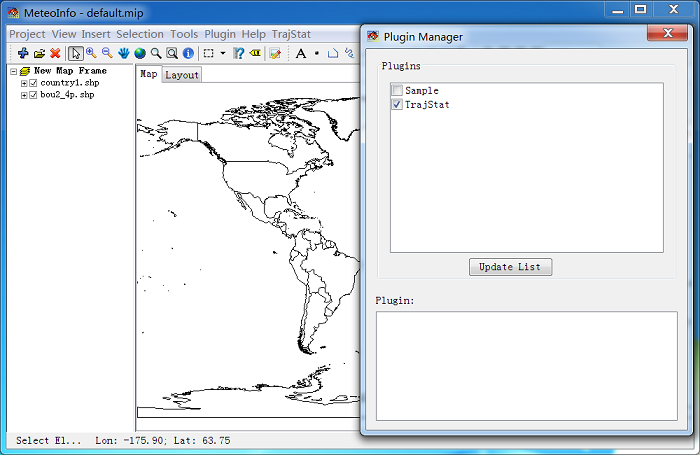

Download and Run TrajStat¶
MeteoInfo Java version and TrajStat Java plugin could be downloaded freely from the website http://www.meteothink.org . The complete TrajStat Java package should, after uncompression, include the following items:
TrajStat plugin library file called “TrajStat.jar”.
Default TrajStat project file called “default.mip”.
Trajectory calculation files in a folder called “working”.
Sample data files in a folder called “sample”.
Legend sample files in a folder called “legend”.
Support data files for trajectory calculation in a folder called “bdyfiles”.
README file.
Copy the unzipped TrajStat folder into the “plugins” folder of MeteoInfo installation path. Start the MeteoInfo program and open Plugin Manager dialog, then press “Update List” button to add TrajStat plugin in the plugin list. The plugin can be loaded in Plugin Manager dialog or by pressing the plugin sub-menu under “Plugin” menu. “TrajStat” menu will be added after the plugin is loaded, and all functions are included under the menu.
